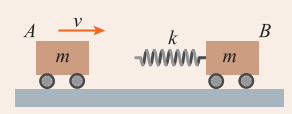
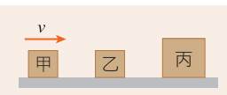
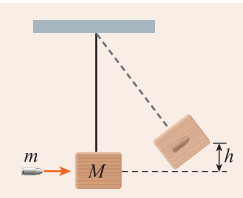
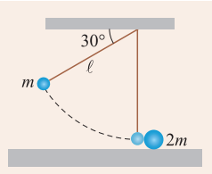

第二冊
第一章：靜力平衡 (待建置)
合力與合力矩為零的平衡判準。
第二章：動量與角動量 (待建置)
動量守恆、衝量與角動量守恆。


第三章：碰撞 (待建置)
透過例題觀察碰撞前後的速度、動量與動能變化。
| 示意圖 | 碰撞類型 | 例題 | 內容 | 連結 |
|---|---|---|---|---|
 | 彈性碰撞 | 例題 3 | 一維彈性碰撞與彈簧位能轉換 | 開啟動畫 |
 | 例題 4 | 一維多物體彈性碰撞 | 開啟動畫 | |
 | 完全非彈性碰撞 | 例題 1 | 完全非彈性碰撞 | 開啟動畫 |
 | 例題 2 | 單擺與小球完全非彈性碰撞 | 開啟動畫 |
第四章：氣體動力論
觀察溫度、粒子數與 Maxwell 速率分布的關係。
| 縮圖 | 模擬名稱 | 說明 | 操作 |
|---|---|---|---|
| 理想氣體速率分布 | 調整溫度與粒子數，觀察粒子碰撞及速率分布。 | 開啟動畫 |